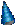
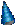

ディズニー映画・コメント

ディズニー映画・コメント



【日本の反応】 ライオンキングに関しては、日本の手塚ファン、手塚を師と仰ぐ日本の漫画家が結構騒いでました。 虫プロは、「手塚がディズニーに憧れてアニメーションを手掛けたのだから、ディズニーが手塚の作品を真似たとしたら、手塚はむしろ喜ぶだろう」と懐の広いところを見せてました。で、その発言でアメリカの盗作騒ぎがおさまったと言われています。 手塚側の弱点は、ジャングル大帝の古さです。１９６８年頃の作品（ダッコちゃんが問題視されない時代だった）なので、今騒ぐと５２話以上ある話の中から人種差別的な表現を含む部分を引き抜かれて騒がれて、マイナスイメージの方が大きくなる可能性が高かったことです。たとえばアフリカ原住民の描写。 と考えると基本的には彼らも懐が深い訳でもないですね。(^-^;;; 結構、計算してるかもしれません。 で、彼らが採った方法は「ジャングル大帝劇場版」の制作ですね。オリジナルはディズニーより古いので文句の付けようはありません。 【ポイント】 ファンや漫画家にしても、盗作騒ぎをしたのではなく、内容、設定が非常に似ている点から、謝辞を入れてくれ、というような話だったと思います。 ディズニーのアニメーションに限らずアメリカ制作の映画で、余所の国にオリジ ナルがある場合、テロップにネタの出所が「判るように」書かれる場合は極めて希で 、申し訳程度に小さな文字で書かれるだけです。たとえば、日本のアニメーションの 英語版などですね。吹き替え用のシナリオライターの名前は大きく出ますが、オリジ ナルの制作会社の名前は読めないような字で読めないような早さで流されるだけです 。制作会社のテロップがエンディングにでかでかと出るようなモノ、絵として会社名 が流れるモノはエンディングのアニメーションそのものがカットされてます。 【アメリカの態度】 アメリカ側が騒がなかった理由（問題としてとりあげなかった理由）としては、当時まだジャパンバッシングの余波が残っていた（地方では日本車をバットで叩き壊すイベントなどがまだあった）ことと、ディズニーがある意味アメリカの象徴であったためだと思います。松下やソニーが映画会社を買い取った時の報道の仕方を見ると、ディズニーに黒判定を付けるような報道が行われるはずがないことが予想できます。 また、アメリカの国情として他国（ヨーロッパ以外）のオリジナルは殆ど認めたがらないようです。特に日本は「顔」が見えないと言われたりします。（今回のように日本の）「オリジナル」を意図的に削除されてしまってはどうしようも無いわけですが。 |
[ホーム]